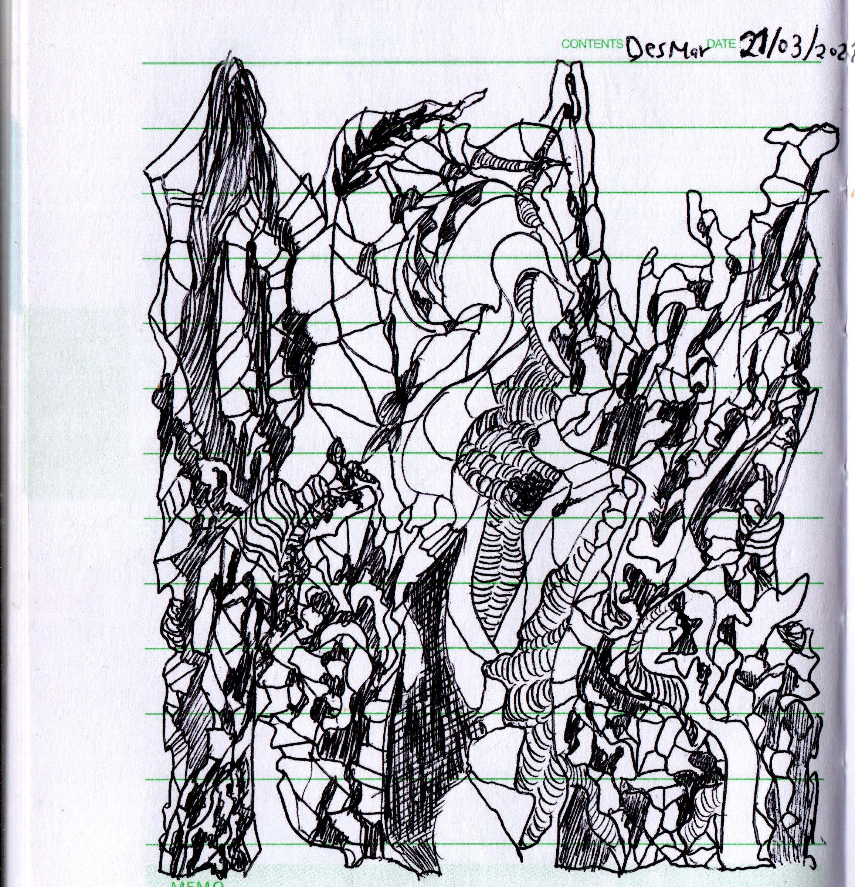

CATEGORIES
Garabatos
07 Jun 2021 - Grimpoteuthis
Algunos garabatos.
[Synapsis]

[Volkanopus]
[Sub]
[Hope]
[Magic]
[Greetings]

[Atomic Data]

Fuentes
- Fundamentos del sistema operativo UNIX, Jose M. Diaz - Rocio Muñoz, (2008).
- C Lenguaje de programación, Wikipedia.
- Preprocessor, Wikipedia.
- Lenguaje C, Enrique Vicente Bonet Esteban.
- Uso de la funcion “main” en C/C++, Rodrigo Diaz, (2009).
Última modificación: 08 May 2021